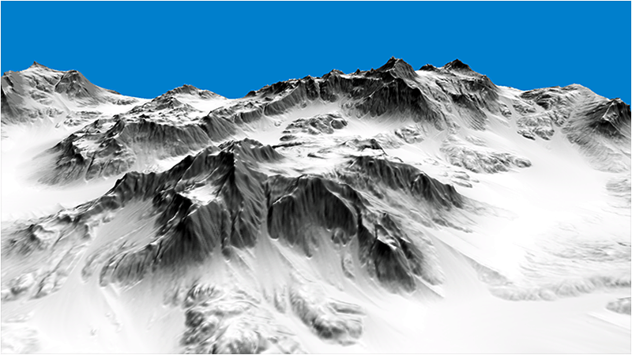
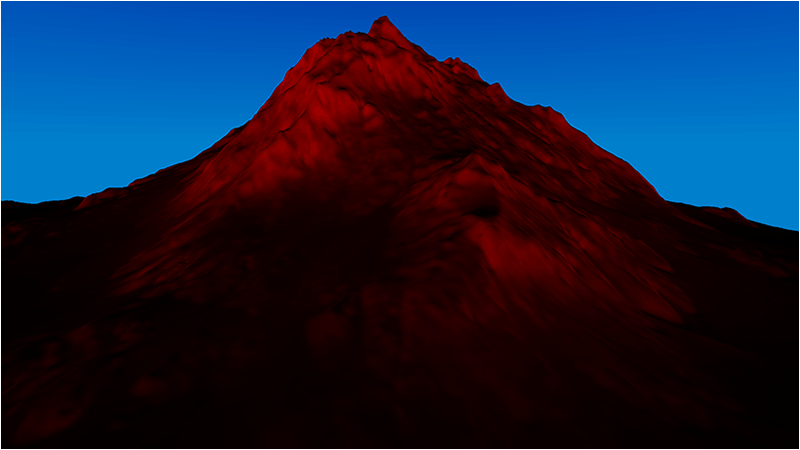

In this terrain tutorial we will cover the use of procedural parameters for determining the placement and application of different textures/materials to the terrain during runtime.
Procedural parameters are usually calculated in our shaders based on input textures or the terrain data itself.
One of the most popular parameters is to use the height of the pixel being rendered and apply a texture using different height bands.
In this way you can specify the ground texture to be below a certain height, then a rock texture for anything above that height, and finally a snow texture for anything in the final height range.
Although this works the results are not entirely realistic.
A more useful procedural parameter to use for determining which texture to apply is the use the slope of the current pixel.
The slope can be easily calculated (one minus the Y normal) and has the properties of reflecting real world growth and deposition patterns.
For example in this tutorial we use the slope to determine where the rock gets exposed, and everything less than that slope is covered with snow.
This represents a real world pattern where anything with too much slope the snow will never accumulate on.
Likewise this can be extended to growth patterns, erosion patterns, and so forth.
Here is an example of just using snow and rock:

There are other procedural parameters that can be used but we will concentrate on just slope for this tutorial.
It should be noted that you can use slope in many different fashions.
For example you can expose or blend multiple textures using different ranges of slope.
In this particular tutorial we use anything above 0.2f to be exposed rock, and anything below to be a linear interpolation of snow and rock based on the slope value.
The linear interpolation allows a smooth transition between the rock and the snow instead of sharp and noticeable cut-off.
This smooth transition can be seen in the image below where I just render the slope value in red:

Now most modern terrain rendering engines and terrain generators use a combination of a number of different procedural parameters combined with painted texture placement masks to generate realistic terrain.
But you can get great results by just starting with slope.
For this tutorial we still used the same RAW height map as the previous tutorials.
All we have changed is the pixel shader code as well as using a stone and a snow texture instead of just the dirt texture.
Also I have left out the use of the color map so that we can clearly see just the use of the two materials and the slope procedural parameter combining them.
Terrain.vs
The terrain vertex shader remains the same as the previous tutorial.
////////////////////////////////////////////////////////////////////////////////
// Filename: terrain.vs
////////////////////////////////////////////////////////////////////////////////
/////////////
// GLOBALS //
/////////////
cbuffer MatrixBuffer
{
matrix worldMatrix;
matrix viewMatrix;
matrix projectionMatrix;
};
//////////////
// TYPEDEFS //
//////////////
struct VertexInputType
{
float4 position : POSITION;
float2 tex : TEXCOORD0;
float3 normal : NORMAL;
float3 tangent : TANGENT;
float3 binormal : BINORMAL;
float3 color : COLOR;
};
struct PixelInputType
{
float4 position : SV_POSITION;
float2 tex : TEXCOORD0;
float3 normal : NORMAL;
float3 tangent : TANGENT;
float3 binormal : BINORMAL;
float4 color : COLOR;
};
////////////////////////////////////////////////////////////////////////////////
// Vertex Shader
////////////////////////////////////////////////////////////////////////////////
PixelInputType TerrainVertexShader(VertexInputType input)
{
PixelInputType output;
// Change the position vector to be 4 units for proper matrix calculations.
input.position.w = 1.0f;
// Calculate the position of the vertex against the world, view, and projection matrices.
output.position = mul(input.position, worldMatrix);
output.position = mul(output.position, viewMatrix);
output.position = mul(output.position, projectionMatrix);
// Store the texture coordinates for the pixel shader.
output.tex = input.tex;
// Calculate the normal vector against the world matrix only and then normalize the final value.
output.normal = mul(input.normal, (float3x3)worldMatrix);
output.normal = normalize(output.normal);
// Calculate the tangent vector against the world matrix only and then normalize the final value.
output.tangent = mul(input.tangent, (float3x3)worldMatrix);
output.tangent = normalize(output.tangent);
// Calculate the binormal vector against the world matrix only and then normalize the final value.
output.binormal = mul(input.binormal, (float3x3)worldMatrix);
output.binormal = normalize(output.binormal);
// Store the input color for the pixel shader to use.
output.color = float4(input.color, 1.0f);
return output;
}
Terrain.ps
The terrain pixel shader has changed quite a bit.
First we have a second normal map which is used for the snow.
Also I didn't add a diffuse texture for the snow since I just use the color white in the shader.
In the shader code we now begin by calculating the slope of this specific pixel, and this will be our key procedural parameter for determining the final output color.
Next we setup the two materials in the same fashion; we first sample the texture and the normal map, then calculate the lighting for that material using the normal map, and then finally we combine the light with the texture to complete the material.
We do this for both the rock and the snow material.
Finally we combine the materials based on the slope value.
If the slope is above 0.2f then we only render the rock material.
If it is below 0.2f then we do a linear interpolation based on the slope value between the snow and the rock material to create a smooth transition from the rock to the snow.
////////////////////////////////////////////////////////////////////////////////
// Filename: terrain.ps
////////////////////////////////////////////////////////////////////////////////
//////////////
// TEXTURES //
//////////////
Texture2D diffuseTexture1 : register(t0);
Texture2D normalTexture1 : register(t1);
Texture2D normalTexture2 : register(t2);
//////////////
// SAMPLERS //
//////////////
SamplerState SampleType : register(s0);
//////////////////////
// CONSTANT BUFFERS //
//////////////////////
cbuffer LightBuffer
{
float4 diffuseColor;
float3 lightDirection;
float padding;
};
//////////////
// TYPEDEFS //
//////////////
struct PixelInputType
{
float4 position : SV_POSITION;
float2 tex : TEXCOORD0;
float3 normal : NORMAL;
float3 tangent : TANGENT;
float3 binormal : BINORMAL;
float4 color : COLOR;
};
////////////////////////////////////////////////////////////////////////////////
// Pixel Shader
////////////////////////////////////////////////////////////////////////////////
float4 TerrainPixelShader(PixelInputType input) : SV_TARGET
{
float slope;
float3 lightDir;
float4 textureColor1;
float4 textureColor2;
float4 bumpMap;
float3 bumpNormal;
float lightIntensity;
float4 material1;
float4 material2;
float blendAmount;
float4 color;
// Calculate the slope of this point.
slope = 1.0f - input.normal.y;
// Invert the light direction for calculations.
lightDir = -lightDirection;
// Setup the first material.
textureColor1 = diffuseTexture1.Sample(SampleType, input.tex);
bumpMap = normalTexture1.Sample(SampleType, input.tex);
bumpMap = (bumpMap * 2.0f) - 1.0f;
bumpNormal = (bumpMap.x * input.tangent) + (bumpMap.y * input.binormal) + (bumpMap.z * input.normal);
bumpNormal = normalize(bumpNormal);
lightIntensity = saturate(dot(bumpNormal, lightDir));
material1 = saturate(textureColor1 * lightIntensity);
// Setup the second material.
textureColor2 = float4(1.0f, 1.0f, 1.0f, 1.0f); // Snow color.
bumpMap = normalTexture2.Sample(SampleType, input.tex);
bumpMap = (bumpMap * 2.0f) - 1.0f;
bumpNormal = (bumpMap.x * input.tangent) + (bumpMap.y * input.binormal) + (bumpMap.z * input.normal);
bumpNormal = normalize(bumpNormal);
lightIntensity = saturate(dot(bumpNormal, lightDir));
material2 = saturate(textureColor2 * lightIntensity);
// Determine which material to use based on slope.
if(slope < 0.2)
{
blendAmount = slope / 0.2f;
color = lerp(material2, material1, blendAmount);
}
if(slope >= 0.2)
{
color = material1;
}
return color;
}
Terrainshaderclass.h
The TerrainShaderClass has been modified to accept an extra normal map for the snow material.
////////////////////////////////////////////////////////////////////////////////
// Filename: terrainshaderclass.h
////////////////////////////////////////////////////////////////////////////////
#ifndef _TERRAINSHADERCLASS_H_
#define _TERRAINSHADERCLASS_H_
//////////////
// INCLUDES //
//////////////
#include <d3d11.h>
#include <d3dcompiler.h>
#include <directxmath.h>
#include <fstream>
using namespace DirectX;
using namespace std;
////////////////////////////////////////////////////////////////////////////////
// Class name: TerrainShaderClass
////////////////////////////////////////////////////////////////////////////////
class TerrainShaderClass
{
private:
struct MatrixBufferType
{
XMMATRIX world;
XMMATRIX view;
XMMATRIX projection;
};
struct LightBufferType
{
XMFLOAT4 diffuseColor;
XMFLOAT3 lightDirection;
float padding;
};
public:
TerrainShaderClass();
TerrainShaderClass(const TerrainShaderClass&);
~TerrainShaderClass();
bool Initialize(ID3D11Device*, HWND);
void Shutdown();
bool Render(ID3D11DeviceContext*, int, XMMATRIX, XMMATRIX, XMMATRIX, ID3D11ShaderResourceView*, ID3D11ShaderResourceView*,
ID3D11ShaderResourceView*, XMFLOAT3, XMFLOAT4);
private:
bool InitializeShader(ID3D11Device*, HWND, WCHAR*, WCHAR*);
void ShutdownShader();
void OutputShaderErrorMessage(ID3D10Blob*, HWND, WCHAR*);
bool SetShaderParameters(ID3D11DeviceContext*, XMMATRIX, XMMATRIX, XMMATRIX, ID3D11ShaderResourceView*, ID3D11ShaderResourceView*,
ID3D11ShaderResourceView*, XMFLOAT3, XMFLOAT4);
void RenderShader(ID3D11DeviceContext*, int);
private:
ID3D11VertexShader* m_vertexShader;
ID3D11PixelShader* m_pixelShader;
ID3D11InputLayout* m_layout;
ID3D11Buffer* m_matrixBuffer;
ID3D11SamplerState* m_sampleState;
ID3D11Buffer* m_lightBuffer;
};
#endif
Terrainshaderclass.cpp
////////////////////////////////////////////////////////////////////////////////
// Filename: terrainshaderclass.cpp
////////////////////////////////////////////////////////////////////////////////
#include "terrainshaderclass.h"
TerrainShaderClass::TerrainShaderClass()
{
m_vertexShader = 0;
m_pixelShader = 0;
m_layout = 0;
m_matrixBuffer = 0;
m_sampleState = 0;
m_lightBuffer = 0;
}
TerrainShaderClass::TerrainShaderClass(const TerrainShaderClass& other)
{
}
TerrainShaderClass::~TerrainShaderClass()
{
}
bool TerrainShaderClass::Initialize(ID3D11Device* device, HWND hwnd)
{
bool result;
// Initialize the vertex and pixel shaders.
result = InitializeShader(device, hwnd, L"../Engine/terrain.vs", L"../Engine/terrain.ps");
if(!result)
{
return false;
}
return true;
}
void TerrainShaderClass::Shutdown()
{
// Shutdown the vertex and pixel shaders as well as the related objects.
ShutdownShader();
return;
}
Render now takes an additional normal map as input.
bool TerrainShaderClass::Render(ID3D11DeviceContext* deviceContext, int indexCount, XMMATRIX worldMatrix, XMMATRIX viewMatrix,
XMMATRIX projectionMatrix, ID3D11ShaderResourceView* texture, ID3D11ShaderResourceView* normalMap,
ID3D11ShaderResourceView* normalMap2, XMFLOAT3 lightDirection, XMFLOAT4 diffuseColor)
{
bool result;
// Set the shader parameters that it will use for rendering.
result = SetShaderParameters(deviceContext, worldMatrix, viewMatrix, projectionMatrix, texture, normalMap, normalMap2,
lightDirection, diffuseColor);
if(!result)
{
return false;
}
// Now render the prepared buffers with the shader.
RenderShader(deviceContext, indexCount);
return true;
}
bool TerrainShaderClass::InitializeShader(ID3D11Device* device, HWND hwnd, WCHAR* vsFilename, WCHAR* psFilename)
{
HRESULT result;
ID3D10Blob* errorMessage;
ID3D10Blob* vertexShaderBuffer;
ID3D10Blob* pixelShaderBuffer;
D3D11_INPUT_ELEMENT_DESC polygonLayout[6];
unsigned int numElements;
D3D11_BUFFER_DESC matrixBufferDesc;
D3D11_SAMPLER_DESC samplerDesc;
D3D11_BUFFER_DESC lightBufferDesc;
// Initialize the pointers this function will use to null.
errorMessage = 0;
vertexShaderBuffer = 0;
pixelShaderBuffer = 0;
// Compile the vertex shader code.
result = D3DCompileFromFile(vsFilename, NULL, NULL, "TerrainVertexShader", "vs_5_0", D3D10_SHADER_ENABLE_STRICTNESS, 0,
&vertexShaderBuffer, &errorMessage);
if(FAILED(result))
{
// If the shader failed to compile it should have writen something to the error message.
if(errorMessage)
{
OutputShaderErrorMessage(errorMessage, hwnd, vsFilename);
}
// If there was nothing in the error message then it simply could not find the shader file itself.
else
{
MessageBox(hwnd, vsFilename, L"Missing Shader File", MB_OK);
}
return false;
}
// Compile the pixel shader code.
result = D3DCompileFromFile(psFilename, NULL, NULL, "TerrainPixelShader", "ps_5_0", D3D10_SHADER_ENABLE_STRICTNESS, 0,
&pixelShaderBuffer, &errorMessage);
if(FAILED(result))
{
// If the shader failed to compile it should have writen something to the error message.
if(errorMessage)
{
OutputShaderErrorMessage(errorMessage, hwnd, psFilename);
}
// If there was nothing in the error message then it simply could not find the file itself.
else
{
MessageBox(hwnd, psFilename, L"Missing Shader File", MB_OK);
}
return false;
}
// Create the vertex shader from the buffer.
result = device->CreateVertexShader(vertexShaderBuffer->GetBufferPointer(), vertexShaderBuffer->GetBufferSize(), NULL, &m_vertexShader);
if(FAILED(result))
{
return false;
}
// Create the pixel shader from the buffer.
result = device->CreatePixelShader(pixelShaderBuffer->GetBufferPointer(), pixelShaderBuffer->GetBufferSize(), NULL, &m_pixelShader);
if(FAILED(result))
{
return false;
}
// Create the vertex input layout description.
polygonLayout[0].SemanticName = "POSITION";
polygonLayout[0].SemanticIndex = 0;
polygonLayout[0].Format = DXGI_FORMAT_R32G32B32_FLOAT;
polygonLayout[0].InputSlot = 0;
polygonLayout[0].AlignedByteOffset = 0;
polygonLayout[0].InputSlotClass = D3D11_INPUT_PER_VERTEX_DATA;
polygonLayout[0].InstanceDataStepRate = 0;
polygonLayout[1].SemanticName = "TEXCOORD";
polygonLayout[1].SemanticIndex = 0;
polygonLayout[1].Format = DXGI_FORMAT_R32G32_FLOAT;
polygonLayout[1].InputSlot = 0;
polygonLayout[1].AlignedByteOffset = D3D11_APPEND_ALIGNED_ELEMENT;
polygonLayout[1].InputSlotClass = D3D11_INPUT_PER_VERTEX_DATA;
polygonLayout[1].InstanceDataStepRate = 0;
polygonLayout[2].SemanticName = "NORMAL";
polygonLayout[2].SemanticIndex = 0;
polygonLayout[2].Format = DXGI_FORMAT_R32G32B32_FLOAT;
polygonLayout[2].InputSlot = 0;
polygonLayout[2].AlignedByteOffset = D3D11_APPEND_ALIGNED_ELEMENT;
polygonLayout[2].InputSlotClass = D3D11_INPUT_PER_VERTEX_DATA;
polygonLayout[2].InstanceDataStepRate = 0;
polygonLayout[3].SemanticName = "TANGENT";
polygonLayout[3].SemanticIndex = 0;
polygonLayout[3].Format = DXGI_FORMAT_R32G32B32_FLOAT;
polygonLayout[3].InputSlot = 0;
polygonLayout[3].AlignedByteOffset = D3D11_APPEND_ALIGNED_ELEMENT;
polygonLayout[3].InputSlotClass = D3D11_INPUT_PER_VERTEX_DATA;
polygonLayout[3].InstanceDataStepRate = 0;
polygonLayout[4].SemanticName = "BINORMAL";
polygonLayout[4].SemanticIndex = 0;
polygonLayout[4].Format = DXGI_FORMAT_R32G32B32_FLOAT;
polygonLayout[4].InputSlot = 0;
polygonLayout[4].AlignedByteOffset = D3D11_APPEND_ALIGNED_ELEMENT;
polygonLayout[4].InputSlotClass = D3D11_INPUT_PER_VERTEX_DATA;
polygonLayout[4].InstanceDataStepRate = 0;
polygonLayout[5].SemanticName = "COLOR";
polygonLayout[5].SemanticIndex = 0;
polygonLayout[5].Format = DXGI_FORMAT_R32G32B32_FLOAT;
polygonLayout[5].InputSlot = 0;
polygonLayout[5].AlignedByteOffset = D3D11_APPEND_ALIGNED_ELEMENT;
polygonLayout[5].InputSlotClass = D3D11_INPUT_PER_VERTEX_DATA;
polygonLayout[5].InstanceDataStepRate = 0;
// Get a count of the elements in the layout.
numElements = sizeof(polygonLayout) / sizeof(polygonLayout[0]);
// Create the vertex input layout.
result = device->CreateInputLayout(polygonLayout, numElements, vertexShaderBuffer->GetBufferPointer(),
vertexShaderBuffer->GetBufferSize(), &m_layout);
if(FAILED(result))
{
return false;
}
// Release the vertex shader buffer and pixel shader buffer since they are no longer needed.
vertexShaderBuffer->Release();
vertexShaderBuffer = 0;
pixelShaderBuffer->Release();
pixelShaderBuffer = 0;
// Setup the description of the dynamic matrix constant buffer that is in the vertex shader.
matrixBufferDesc.Usage = D3D11_USAGE_DYNAMIC;
matrixBufferDesc.ByteWidth = sizeof(MatrixBufferType);
matrixBufferDesc.BindFlags = D3D11_BIND_CONSTANT_BUFFER;
matrixBufferDesc.CPUAccessFlags = D3D11_CPU_ACCESS_WRITE;
matrixBufferDesc.MiscFlags = 0;
matrixBufferDesc.StructureByteStride = 0;
// Create the constant buffer pointer so we can access the vertex shader constant buffer from within this class.
result = device->CreateBuffer(&matrixBufferDesc, NULL, &m_matrixBuffer);
if(FAILED(result))
{
return false;
}
// Create a texture sampler state description.
samplerDesc.Filter = D3D11_FILTER_MIN_MAG_MIP_LINEAR;
samplerDesc.AddressU = D3D11_TEXTURE_ADDRESS_CLAMP;
samplerDesc.AddressV = D3D11_TEXTURE_ADDRESS_CLAMP;
samplerDesc.AddressW = D3D11_TEXTURE_ADDRESS_CLAMP;
samplerDesc.MipLODBias = 0.0f;
samplerDesc.MaxAnisotropy = 1;
samplerDesc.ComparisonFunc = D3D11_COMPARISON_ALWAYS;
samplerDesc.BorderColor[0] = 0;
samplerDesc.BorderColor[1] = 0;
samplerDesc.BorderColor[2] = 0;
samplerDesc.BorderColor[3] = 0;
samplerDesc.MinLOD = 0;
samplerDesc.MaxLOD = D3D11_FLOAT32_MAX;
// Create the texture sampler state.
result = device->CreateSamplerState(&samplerDesc, &m_sampleState);
if(FAILED(result))
{
return false;
}
// Setup the description of the light dynamic constant buffer that is in the pixel shader.
lightBufferDesc.Usage = D3D11_USAGE_DYNAMIC;
lightBufferDesc.ByteWidth = sizeof(LightBufferType);
lightBufferDesc.BindFlags = D3D11_BIND_CONSTANT_BUFFER;
lightBufferDesc.CPUAccessFlags = D3D11_CPU_ACCESS_WRITE;
lightBufferDesc.MiscFlags = 0;
lightBufferDesc.StructureByteStride = 0;
// Create the constant buffer pointer so we can access the pixel shader constant buffer from within this class.
result = device->CreateBuffer(&lightBufferDesc, NULL, &m_lightBuffer);
if(FAILED(result))
{
return false;
}
return true;
}
void TerrainShaderClass::ShutdownShader()
{
// Release the light constant buffer.
if(m_lightBuffer)
{
m_lightBuffer->Release();
m_lightBuffer = 0;
}
// Release the sampler state.
if(m_sampleState)
{
m_sampleState->Release();
m_sampleState = 0;
}
// Release the matrix constant buffer.
if(m_matrixBuffer)
{
m_matrixBuffer->Release();
m_matrixBuffer = 0;
}
// Release the layout.
if(m_layout)
{
m_layout->Release();
m_layout = 0;
}
// Release the pixel shader.
if(m_pixelShader)
{
m_pixelShader->Release();
m_pixelShader = 0;
}
// Release the vertex shader.
if(m_vertexShader)
{
m_vertexShader->Release();
m_vertexShader = 0;
}
return;
}
void TerrainShaderClass::OutputShaderErrorMessage(ID3D10Blob* errorMessage, HWND hwnd, WCHAR* shaderFilename)
{
char* compileErrors;
unsigned long long bufferSize, i;
ofstream fout;
// Get a pointer to the error message text buffer.
compileErrors = (char*)(errorMessage->GetBufferPointer());
// Get the length of the message.
bufferSize = errorMessage->GetBufferSize();
// Open a file to write the error message to.
fout.open("shader-error.txt");
// Write out the error message.
for(i=0; i<bufferSize; i++)
{
fout << compileErrors[i];
}
// Close the file.
fout.close();
// Release the error message.
errorMessage->Release();
errorMessage = 0;
// Pop a message up on the screen to notify the user to check the text file for compile errors.
MessageBox(hwnd, L"Error compiling shader. Check shader-error.txt for message.", shaderFilename, MB_OK);
return;
}
SetShaderParameters also takes an additional normal map as input.
bool TerrainShaderClass::SetShaderParameters(ID3D11DeviceContext* deviceContext, XMMATRIX worldMatrix, XMMATRIX viewMatrix,
XMMATRIX projectionMatrix, ID3D11ShaderResourceView* texture, ID3D11ShaderResourceView* normalMap,
ID3D11ShaderResourceView* normalMap2, XMFLOAT3 lightDirection, XMFLOAT4 diffuseColor)
{
HRESULT result;
D3D11_MAPPED_SUBRESOURCE mappedResource;
MatrixBufferType* dataPtr;
unsigned int bufferNumber;
LightBufferType* dataPtr2;
// Transpose the matrices to prepare them for the shader.
worldMatrix = XMMatrixTranspose(worldMatrix);
viewMatrix = XMMatrixTranspose(viewMatrix);
projectionMatrix = XMMatrixTranspose(projectionMatrix);
// Lock the constant buffer so it can be written to.
result = deviceContext->Map(m_matrixBuffer, 0, D3D11_MAP_WRITE_DISCARD, 0, &mappedResource);
if(FAILED(result))
{
return false;
}
// Get a pointer to the data in the constant buffer.
dataPtr = (MatrixBufferType*)mappedResource.pData;
// Copy the matrices into the constant buffer.
dataPtr->world = worldMatrix;
dataPtr->view = viewMatrix;
dataPtr->projection = projectionMatrix;
// Unlock the constant buffer.
deviceContext->Unmap(m_matrixBuffer, 0);
// Set the position of the constant buffer in the vertex shader.
bufferNumber = 0;
// Finanly set the constant buffer in the vertex shader with the updated values.
deviceContext->VSSetConstantBuffers(bufferNumber, 1, &m_matrixBuffer);
// Set shader texture resources in the pixel shader.
deviceContext->PSSetShaderResources(0, 1, &texture);
deviceContext->PSSetShaderResources(1, 1, &normalMap);
deviceContext->PSSetShaderResources(2, 1, &normalMap2);
// Lock the light constant buffer so it can be written to.
result = deviceContext->Map(m_lightBuffer, 0, D3D11_MAP_WRITE_DISCARD, 0, &mappedResource);
if(FAILED(result))
{
return false;
}
// Get a pointer to the data in the light constant buffer.
dataPtr2 = (LightBufferType*)mappedResource.pData;
// Copy the lighting variables into the constant buffer.
dataPtr2->diffuseColor = diffuseColor;
dataPtr2->lightDirection = lightDirection;
dataPtr2->padding = 0.0f;
// Unlock the light constant buffer.
deviceContext->Unmap(m_lightBuffer, 0);
// Set the position of the light constant buffer in the pixel shader.
bufferNumber = 0;
// Finally set the light constant buffer in the pixel shader with the updated values.
deviceContext->PSSetConstantBuffers(bufferNumber, 1, &m_lightBuffer);
return true;
}
void TerrainShaderClass::RenderShader(ID3D11DeviceContext* deviceContext, int indexCount)
{
// Set the vertex input layout.
deviceContext->IASetInputLayout(m_layout);
// Set the vertex and pixel shaders that will be used to render.
deviceContext->VSSetShader(m_vertexShader, NULL, 0);
deviceContext->PSSetShader(m_pixelShader, NULL, 0);
// Set the sampler state in the pixel shader.
deviceContext->PSSetSamplers(0, 1, &m_sampleState);
// Render the polygon data.
deviceContext->DrawIndexed(indexCount, 0, 0);
return;
}
Shadermanagerclass.h
The terrain shader render function now takes an additional normal map as input for the snow material.
////////////////////////////////////////////////////////////////////////////////
// Filename: shadermanagerclass.h
////////////////////////////////////////////////////////////////////////////////
#ifndef _SHADERMANAGERCLASS_H_
#define _SHADERMANAGERCLASS_H_
///////////////////////
// MY CLASS INCLUDES //
///////////////////////
#include "d3dclass.h"
#include "colorshaderclass.h"
#include "textureshaderclass.h"
#include "lightshaderclass.h"
#include "fontshaderclass.h"
#include "skydomeshaderclass.h"
#include "terrainshaderclass.h"
////////////////////////////////////////////////////////////////////////////////
// Class name: ShaderManagerClass
////////////////////////////////////////////////////////////////////////////////
class ShaderManagerClass
{
public:
ShaderManagerClass();
ShaderManagerClass(const ShaderManagerClass&);
~ShaderManagerClass();
bool Initialize(ID3D11Device*, HWND);
void Shutdown();
bool RenderColorShader(ID3D11DeviceContext*, int, XMMATRIX, XMMATRIX, XMMATRIX);
bool RenderTextureShader(ID3D11DeviceContext*, int, XMMATRIX, XMMATRIX, XMMATRIX, ID3D11ShaderResourceView*);
bool RenderLightShader(ID3D11DeviceContext*, int, XMMATRIX, XMMATRIX, XMMATRIX, ID3D11ShaderResourceView*, XMFLOAT3, XMFLOAT4);
bool RenderFontShader(ID3D11DeviceContext*, int, XMMATRIX, XMMATRIX, XMMATRIX, ID3D11ShaderResourceView*, XMFLOAT4);
bool RenderSkyDomeShader(ID3D11DeviceContext*, int, XMMATRIX, XMMATRIX, XMMATRIX, XMFLOAT4, XMFLOAT4);
bool RenderTerrainShader(ID3D11DeviceContext*, int, XMMATRIX, XMMATRIX, XMMATRIX, ID3D11ShaderResourceView*, ID3D11ShaderResourceView*,
ID3D11ShaderResourceView*, XMFLOAT3, XMFLOAT4);
private:
ColorShaderClass* m_ColorShader;
TextureShaderClass* m_TextureShader;
LightShaderClass* m_LightShader;
FontShaderClass* m_FontShader;
SkyDomeShaderClass* m_SkyDomeShader;
TerrainShaderClass* m_TerrainShader;
};
#endif
Shadermanagerclass.cpp
////////////////////////////////////////////////////////////////////////////////
// Filename: shadermanagerclass.cpp
////////////////////////////////////////////////////////////////////////////////
#include "shadermanagerclass.h"
ShaderManagerClass::ShaderManagerClass()
{
m_ColorShader = 0;
m_TextureShader = 0;
m_LightShader = 0;
m_FontShader = 0;
m_SkyDomeShader = 0;
m_TerrainShader = 0;
}
ShaderManagerClass::ShaderManagerClass(const ShaderManagerClass& other)
{
}
ShaderManagerClass::~ShaderManagerClass()
{
}
bool ShaderManagerClass::Initialize(ID3D11Device* device, HWND hwnd)
{
bool result;
// Create the color shader object.
m_ColorShader = new ColorShaderClass;
if(!m_ColorShader)
{
return false;
}
// Initialize the color shader object.
result = m_ColorShader->Initialize(device, hwnd);
if(!result)
{
return false;
}
// Create the texture shader object.
m_TextureShader = new TextureShaderClass;
if(!m_TextureShader)
{
return false;
}
// Initialize the texture shader object.
result = m_TextureShader->Initialize(device, hwnd);
if(!result)
{
return false;
}
// Create the light shader object.
m_LightShader = new LightShaderClass;
if(!m_LightShader)
{
return false;
}
// Initialize the light shader object.
result = m_LightShader->Initialize(device, hwnd);
if(!result)
{
return false;
}
// Create the font shader object.
m_FontShader = new FontShaderClass;
if(!m_FontShader)
{
return false;
}
// Initialize the font shader object.
result = m_FontShader->Initialize(device, hwnd);
if(!result)
{
return false;
}
// Create the sky dome shader object.
m_SkyDomeShader = new SkyDomeShaderClass;
if(!m_SkyDomeShader)
{
return false;
}
// Initialize the sky dome shader object.
result = m_SkyDomeShader->Initialize(device, hwnd);
if(!result)
{
return false;
}
// Create the terrain shader object.
m_TerrainShader = new TerrainShaderClass;
if (!m_TerrainShader)
{
return false;
}
// Initialize the terrain shader object.
result = m_TerrainShader->Initialize(device, hwnd);
if (!result)
{
return false;
}
return true;
}
void ShaderManagerClass::Shutdown()
{
// Release the terrain shader object.
if (m_TerrainShader)
{
m_TerrainShader->Shutdown();
delete m_TerrainShader;
m_TerrainShader = 0;
}
// Release the sky dome shader object.
if (m_SkyDomeShader)
{
m_SkyDomeShader->Shutdown();
delete m_SkyDomeShader;
m_SkyDomeShader = 0;
}
// Release the font shader object.
if(m_FontShader)
{
m_FontShader->Shutdown();
delete m_FontShader;
m_FontShader = 0;
}
// Release the light shader object.
if(m_LightShader)
{
m_LightShader->Shutdown();
delete m_LightShader;
m_LightShader = 0;
}
// Release the texture shader object.
if(m_TextureShader)
{
m_TextureShader->Shutdown();
delete m_TextureShader;
m_TextureShader = 0;
}
// Release the color shader object.
if(m_ColorShader)
{
m_ColorShader->Shutdown();
delete m_ColorShader;
m_ColorShader = 0;
}
return;
}
bool ShaderManagerClass::RenderColorShader(ID3D11DeviceContext* deviceContext, int indexCount, XMMATRIX worldMatrix, XMMATRIX viewMatrix,
XMMATRIX projectionMatrix)
{
return m_ColorShader->Render(deviceContext, indexCount, worldMatrix, viewMatrix, projectionMatrix);
}
bool ShaderManagerClass::RenderTextureShader(ID3D11DeviceContext* deviceContext, int indexCount, XMMATRIX worldMatrix, XMMATRIX viewMatrix,
XMMATRIX projectionMatrix, ID3D11ShaderResourceView* texture)
{
return m_TextureShader->Render(deviceContext, indexCount, worldMatrix, viewMatrix, projectionMatrix, texture);
}
bool ShaderManagerClass::RenderLightShader(ID3D11DeviceContext* deviceContext, int indexCount, XMMATRIX worldMatrix, XMMATRIX viewMatrix,
XMMATRIX projectionMatrix, ID3D11ShaderResourceView* texture, XMFLOAT3 lightDirection,
XMFLOAT4 diffuseColor)
{
return m_LightShader->Render(deviceContext, indexCount, worldMatrix, viewMatrix, projectionMatrix, texture, lightDirection, diffuseColor);
}
bool ShaderManagerClass::RenderFontShader(ID3D11DeviceContext* deviceContext, int indexCount, XMMATRIX worldMatrix, XMMATRIX viewMatrix,
XMMATRIX projectionMatrix, ID3D11ShaderResourceView* texture, XMFLOAT4 color)
{
return m_FontShader->Render(deviceContext, indexCount, worldMatrix, viewMatrix, projectionMatrix, texture, color);
}
bool ShaderManagerClass::RenderSkyDomeShader(ID3D11DeviceContext* deviceContext, int indexCount, XMMATRIX worldMatrix, XMMATRIX viewMatrix,
XMMATRIX projectionMatrix, XMFLOAT4 apexColor, XMFLOAT4 centerColor)
{
return m_SkyDomeShader->Render(deviceContext, indexCount, worldMatrix, viewMatrix, projectionMatrix, apexColor, centerColor);
}
RenderTerrainShader now takes an additional normal map as input for the snow material.
bool ShaderManagerClass::RenderTerrainShader(ID3D11DeviceContext* deviceContext, int indexCount, XMMATRIX worldMatrix, XMMATRIX viewMatrix,
XMMATRIX projectionMatrix, ID3D11ShaderResourceView* texture, ID3D11ShaderResourceView* normalMap,
ID3D11ShaderResourceView* normalMap2, XMFLOAT3 lightDirection, XMFLOAT4 diffuseColor)
{
return m_TerrainShader->Render(deviceContext, indexCount, worldMatrix, viewMatrix, projectionMatrix, texture, normalMap, normalMap2,
lightDirection, diffuseColor);
}
Applicationclass.h
///////////////////////////////////////////////////////////////////////////////
// Filename: applicationclass.h
////////////////////////////////////////////////////////////////////////////////
#ifndef _APPLICATIONCLASS_H_
#define _APPLICATIONCLASS_H_
/////////////
// GLOBALS //
/////////////
const bool FULL_SCREEN = true;
const bool VSYNC_ENABLED = true;
const float SCREEN_DEPTH = 1500.0f;
const float SCREEN_NEAR = 0.1f;
///////////////////////
// MY CLASS INCLUDES //
///////////////////////
#include "inputclass.h"
#include "d3dclass.h"
#include "shadermanagerclass.h"
#include "texturemanagerclass.h"
#include "timerclass.h"
#include "fpsclass.h"
#include "zoneclass.h"
////////////////////////////////////////////////////////////////////////////////
// Class name: ApplicationClass
////////////////////////////////////////////////////////////////////////////////
class ApplicationClass
{
public:
ApplicationClass();
ApplicationClass(const ApplicationClass&);
~ApplicationClass();
bool Initialize(HINSTANCE, HWND, int, int);
void Shutdown();
bool Frame();
private:
InputClass* m_Input;
D3DClass* m_Direct3D;
ShaderManagerClass* m_ShaderManager;
TextureManagerClass* m_TextureManager;
TimerClass* m_Timer;
FpsClass* m_Fps;
ZoneClass* m_Zone;
};
#endif
Applicationclass.cpp
////////////////////////////////////////////////////////////////////////////////
// Filename: applicationclass.cpp
////////////////////////////////////////////////////////////////////////////////
#include "applicationclass.h"
ApplicationClass::ApplicationClass()
{
m_Input = 0;
m_Direct3D = 0;
m_Timer = 0;
m_Fps = 0;
m_ShaderManager = 0;
m_TextureManager = 0;
m_Zone = 0;
}
ApplicationClass::ApplicationClass(const ApplicationClass& other)
{
}
ApplicationClass::~ApplicationClass()
{
}
bool ApplicationClass::Initialize(HINSTANCE hinstance, HWND hwnd, int screenWidth, int screenHeight)
{
bool result;
// Create the input object.
m_Input = new InputClass;
if (!m_Input)
{
return false;
}
// Initialize the input object.
result = m_Input->Initialize(hinstance, hwnd, screenWidth, screenHeight);
if(!result)
{
MessageBox(hwnd, L"Could not initialize the input object.", L"Error", MB_OK);
return false;
}
// Create the Direct3D object.
m_Direct3D = new D3DClass;
if(!m_Direct3D)
{
return false;
}
// Initialize the Direct3D object.
result = m_Direct3D->Initialize(screenWidth, screenHeight, VSYNC_ENABLED, hwnd, FULL_SCREEN, SCREEN_DEPTH, SCREEN_NEAR);
if(!result)
{
MessageBox(hwnd, L"Could not initialize Direct3D.", L"Error", MB_OK);
return false;
}
// Create the shader manager object.
m_ShaderManager = new ShaderManagerClass;
if(!m_ShaderManager)
{
return false;
}
// Initialize the shader manager object.
result = m_ShaderManager->Initialize(m_Direct3D->GetDevice(), hwnd);
if(!result)
{
MessageBox(hwnd, L"Could not initialize the shader manager object.", L"Error", MB_OK);
return false;
}
// Create the texture manager object.
m_TextureManager = new TextureManagerClass;
if(!m_TextureManager)
{
return false;
}
// Initialize the texture manager object.
result = m_TextureManager->Initialize(10);
if(!result)
{
MessageBox(hwnd, L"Could not initialize the texture manager object.", L"Error", MB_OK);
return false;
}
We load a rock diffuse and normal map.
We also load a normal map for the snow material.
However we don't load a diffuse texture for the snow material since I just use the color white in the pixel shader instead.
// Load textures into the texture manager.
result = m_TextureManager->LoadTexture(m_Direct3D->GetDevice(), m_Direct3D->GetDeviceContext(), "../Engine/data/textures/rock01d.tga", 0);
if(!result)
{
return false;
}
result = m_TextureManager->LoadTexture(m_Direct3D->GetDevice(), m_Direct3D->GetDeviceContext(), "../Engine/data/textures/rock01n.tga", 1);
if(!result)
{
return false;
}
result = m_TextureManager->LoadTexture(m_Direct3D->GetDevice(), m_Direct3D->GetDeviceContext(), "../Engine/data/textures/snow01n.tga", 2);
if (!result)
{
return false;
}
// Create the timer object.
m_Timer = new TimerClass;
if(!m_Timer)
{
return false;
}
// Initialize the timer object.
result = m_Timer->Initialize();
if(!result)
{
MessageBox(hwnd, L"Could not initialize the timer object.", L"Error", MB_OK);
return false;
}
// Create the fps object.
m_Fps = new FpsClass;
if(!m_Fps)
{
return false;
}
// Initialize the fps object.
m_Fps->Initialize();
// Create the zone object.
m_Zone = new ZoneClass;
if(!m_Zone)
{
return false;
}
// Initialize the zone object.
result = m_Zone->Initialize(m_Direct3D, hwnd, screenWidth, screenHeight, SCREEN_DEPTH);
if(!result)
{
MessageBox(hwnd, L"Could not initialize the zone object.", L"Error", MB_OK);
return false;
}
return true;
}
void ApplicationClass::Shutdown()
{
// Release the zone object.
if(m_Zone)
{
m_Zone->Shutdown();
delete m_Zone;
m_Zone = 0;
}
// Release the fps object.
if(m_Fps)
{
delete m_Fps;
m_Fps = 0;
}
// Release the timer object.
if(m_Timer)
{
delete m_Timer;
m_Timer = 0;
}
// Release the texture manager object.
if(m_TextureManager)
{
m_TextureManager->Shutdown();
delete m_TextureManager;
m_TextureManager = 0;
}
// Release the shader manager object.
if(m_ShaderManager)
{
m_ShaderManager->Shutdown();
delete m_ShaderManager;
m_ShaderManager = 0;
}
// Release the Direct3D object.
if(m_Direct3D)
{
m_Direct3D->Shutdown();
delete m_Direct3D;
m_Direct3D = 0;
}
// Release the input object.
if(m_Input)
{
m_Input->Shutdown();
delete m_Input;
m_Input = 0;
}
return;
}
bool ApplicationClass::Frame()
{
bool result;
// Update the system stats.
m_Fps->Frame();
m_Timer->Frame();
// Do the input frame processing.
result = m_Input->Frame();
if(!result)
{
return false;
}
// Check if the user pressed escape and wants to exit the application.
if(m_Input->IsEscapePressed() == true)
{
return false;
}
// Do the zone frame processing.
result = m_Zone->Frame(m_Direct3D, m_Input, m_ShaderManager, m_TextureManager, m_Timer->GetTime(), m_Fps->GetFps());
if(!result)
{
return false;
}
return result;
}
Zoneclass.h
////////////////////////////////////////////////////////////////////////////////
// Filename: zoneclass.h
////////////////////////////////////////////////////////////////////////////////
#ifndef _ZONECLASS_H_
#define _ZONECLASS_H_
///////////////////////
// MY CLASS INCLUDES //
///////////////////////
#include "d3dclass.h"
#include "inputclass.h"
#include "shadermanagerclass.h"
#include "texturemanagerclass.h"
#include "timerclass.h"
#include "userinterfaceclass.h"
#include "cameraclass.h"
#include "lightclass.h"
#include "positionclass.h"
#include "frustumclass.h"
#include "skydomeclass.h"
#include "terrainclass.h"
////////////////////////////////////////////////////////////////////////////////
// Class name: ZoneClass
////////////////////////////////////////////////////////////////////////////////
class ZoneClass
{
public:
ZoneClass();
ZoneClass(const ZoneClass&);
~ZoneClass();
bool Initialize(D3DClass*, HWND, int, int, float);
void Shutdown();
bool Frame(D3DClass*, InputClass*, ShaderManagerClass*, TextureManagerClass*, float, int);
private:
void HandleMovementInput(InputClass*, float);
bool Render(D3DClass*, ShaderManagerClass*, TextureManagerClass*);
private:
UserInterfaceClass* m_UserInterface;
CameraClass* m_Camera;
LightClass* m_Light;
PositionClass* m_Position;
FrustumClass* m_Frustum;
SkyDomeClass* m_SkyDome;
TerrainClass* m_Terrain;
bool m_displayUI, m_wireFrame, m_cellLines, m_heightLocked;
};
#endif
Zoneclass.cpp
////////////////////////////////////////////////////////////////////////////////
// Filename: zoneclass.cpp
////////////////////////////////////////////////////////////////////////////////
#include "zoneclass.h"
ZoneClass::ZoneClass()
{
m_UserInterface = 0;
m_Camera = 0;
m_Light = 0;
m_Position = 0;
m_Frustum = 0;
m_SkyDome = 0;
m_Terrain = 0;
}
ZoneClass::ZoneClass(const ZoneClass& other)
{
}
ZoneClass::~ZoneClass()
{
}
bool ZoneClass::Initialize(D3DClass* Direct3D, HWND hwnd, int screenWidth, int screenHeight, float screenDepth)
{
bool result;
// Create the user interface object.
m_UserInterface = new UserInterfaceClass;
if(!m_UserInterface)
{
return false;
}
// Initialize the user interface object.
result = m_UserInterface->Initialize(Direct3D, screenHeight, screenWidth);
if(!result)
{
MessageBox(hwnd, L"Could not initialize the user interface object.", L"Error", MB_OK);
return false;
}
// Create the camera object.
m_Camera = new CameraClass;
if(!m_Camera)
{
return false;
}
// Set the initial position of the camera and build the matrices needed for rendering.
m_Camera->SetPosition(0.0f, 0.0f, -10.0f);
m_Camera->Render();
m_Camera->RenderBaseViewMatrix();
// Create the light object.
m_Light = new LightClass;
if(!m_Light)
{
return false;
}
// Initialize the light object.
m_Light->SetDiffuseColor(1.0f, 1.0f, 1.0f, 1.0f);
m_Light->SetDirection(-0.5f, -1.0f, -0.5f);
// Create the position object.
m_Position = new PositionClass;
if(!m_Position)
{
return false;
}
// Set the initial position and rotation.
m_Position->SetPosition(512.5f, 10.0f, 10.0f);
m_Position->SetRotation(0.0f, 0.0f, 0.0f);
// Create the frustum object.
m_Frustum = new FrustumClass;
if(!m_Frustum)
{
return false;
}
// Initialize the frustum object.
m_Frustum->Initialize(screenDepth);
// Create the sky dome object.
m_SkyDome = new SkyDomeClass;
if(!m_SkyDome)
{
return false;
}
// Initialize the sky dome object.
result = m_SkyDome->Initialize(Direct3D->GetDevice());
if(!result)
{
MessageBox(hwnd, L"Could not initialize the sky dome object.", L"Error", MB_OK);
return false;
}
// Create the terrain object.
m_Terrain = new TerrainClass;
if(!m_Terrain)
{
return false;
}
// Initialize the terrain object.
result = m_Terrain->Initialize(Direct3D->GetDevice(), "../Engine/data/setup.txt");
if(!result)
{
MessageBox(hwnd, L"Could not initialize the terrain object.", L"Error", MB_OK);
return false;
}
// Set the UI to display by default.
m_displayUI = true;
// Set wire frame rendering initially to disabled.
m_wireFrame = false;
// Set the rendering of cell lines initially to disabled.
m_cellLines = false;
// Set the user locked to the terrain height for movement.
m_heightLocked = true;
return true;
}
void ZoneClass::Shutdown()
{
// Release the terrain object.
if(m_Terrain)
{
m_Terrain->Shutdown();
delete m_Terrain;
m_Terrain = 0;
}
// Release the sky dome object.
if(m_SkyDome)
{
m_SkyDome->Shutdown();
delete m_SkyDome;
m_SkyDome = 0;
}
// Release the frustum object.
if(m_Frustum)
{
delete m_Frustum;
m_Frustum = 0;
}
// Release the position object.
if(m_Position)
{
delete m_Position;
m_Position = 0;
}
// Release the light object.
if(m_Light)
{
delete m_Light;
m_Light = 0;
}
// Release the camera object.
if(m_Camera)
{
delete m_Camera;
m_Camera = 0;
}
// Release the user interface object.
if(m_UserInterface)
{
m_UserInterface->Shutdown();
delete m_UserInterface;
m_UserInterface = 0;
}
return;
}
bool ZoneClass::Frame(D3DClass* Direct3D, InputClass* Input, ShaderManagerClass* ShaderManager, TextureManagerClass* TextureManager,
float frameTime, int fps)
{
bool result, foundHeight;
float posX, posY, posZ, rotX, rotY, rotZ, height;
// Do the frame input processing.
HandleMovementInput(Input, frameTime);
// Get the view point position/rotation.
m_Position->GetPosition(posX, posY, posZ);
m_Position->GetRotation(rotX, rotY, rotZ);
// Do the frame processing for the user interface.
result = m_UserInterface->Frame(Direct3D->GetDeviceContext(), fps, posX, posY, posZ, rotX, rotY, rotZ);
if(!result)
{
return false;
}
// Do the terrain frame processing.
m_Terrain->Frame();
// If the height is locked to the terrain then position the camera on top of it.
if(m_heightLocked)
{
// Get the height of the triangle that is directly underneath the given camera position.
foundHeight = m_Terrain->GetHeightAtPosition(posX, posZ, height);
if(foundHeight)
{
// If there was a triangle under the camera then position the camera just above it by one meter.
m_Position->SetPosition(posX, height + 1.0f, posZ);
m_Camera->SetPosition(posX, height + 1.0f, posZ);
}
}
// Render the graphics.
result = Render(Direct3D, ShaderManager, TextureManager);
if(!result)
{
return false;
}
return true;
}
void ZoneClass::HandleMovementInput(InputClass* Input, float frameTime)
{
bool keyDown;
float posX, posY, posZ, rotX, rotY, rotZ;
// Set the frame time for calculating the updated position.
m_Position->SetFrameTime(frameTime);
// Handle the input.
keyDown = Input->IsLeftPressed();
m_Position->TurnLeft(keyDown);
keyDown = Input->IsRightPressed();
m_Position->TurnRight(keyDown);
keyDown = Input->IsUpPressed();
m_Position->MoveForward(keyDown);
keyDown = Input->IsDownPressed();
m_Position->MoveBackward(keyDown);
keyDown = Input->IsAPressed();
m_Position->MoveUpward(keyDown);
keyDown = Input->IsZPressed();
m_Position->MoveDownward(keyDown);
keyDown = Input->IsPgUpPressed();
m_Position->LookUpward(keyDown);
keyDown = Input->IsPgDownPressed();
m_Position->LookDownward(keyDown);
// Get the view point position/rotation.
m_Position->GetPosition(posX, posY, posZ);
m_Position->GetRotation(rotX, rotY, rotZ);
// Set the position of the camera.
m_Camera->SetPosition(posX, posY, posZ);
m_Camera->SetRotation(rotX, rotY, rotZ);
// Determine if the user interface should be displayed or not.
if(Input->IsF1Toggled())
{
m_displayUI = !m_displayUI;
}
// Determine if the terrain should be rendered in wireframe or not.
if(Input->IsF2Toggled())
{
m_wireFrame = !m_wireFrame;
}
// Determine if we should render the lines around each terrain cell.
if(Input->IsF3Toggled())
{
m_cellLines = !m_cellLines;
}
// Determine if we should be locked to the terrain height when we move around or not.
if(Input->IsF4Toggled())
{
m_heightLocked = !m_heightLocked;
}
return;
}
bool ZoneClass::Render(D3DClass* Direct3D, ShaderManagerClass* ShaderManager, TextureManagerClass* TextureManager)
{
XMMATRIX worldMatrix, viewMatrix, projectionMatrix, baseViewMatrix, orthoMatrix;
bool result;
XMFLOAT3 cameraPosition;
int i;
// Generate the view matrix based on the camera's position.
m_Camera->Render();
// Get the world, view, and projection matrices from the camera and d3d objects.
Direct3D->GetWorldMatrix(worldMatrix);
m_Camera->GetViewMatrix(viewMatrix);
Direct3D->GetProjectionMatrix(projectionMatrix);
m_Camera->GetBaseViewMatrix(baseViewMatrix);
Direct3D->GetOrthoMatrix(orthoMatrix);
// Get the position of the camera.
cameraPosition = m_Camera->GetPosition();
// Construct the frustum.
m_Frustum->ConstructFrustum(projectionMatrix, viewMatrix);
// Clear the buffers to begin the scene.
Direct3D->BeginScene(0.0f, 0.0f, 0.0f, 1.0f);
// Turn off back face culling and turn off the Z buffer.
Direct3D->TurnOffCulling();
Direct3D->TurnZBufferOff();
// Translate the sky dome to be centered around the camera position.
worldMatrix = XMMatrixTranslation(cameraPosition.x, cameraPosition.y, cameraPosition.z);
// Render the sky dome using the sky dome shader.
m_SkyDome->Render(Direct3D->GetDeviceContext());
result = ShaderManager->RenderSkyDomeShader(Direct3D->GetDeviceContext(), m_SkyDome->GetIndexCount(), worldMatrix, viewMatrix,
projectionMatrix, m_SkyDome->GetApexColor(), m_SkyDome->GetCenterColor());
if(!result)
{
return false;
}
// Reset the world matrix.
Direct3D->GetWorldMatrix(worldMatrix);
// Turn the Z buffer back and back face culling on.
Direct3D->TurnZBufferOn();
Direct3D->TurnOnCulling();
// Turn on wire frame rendering of the terrain if needed.
if(m_wireFrame)
{
Direct3D->EnableWireframe();
}
// Render the terrain cells (and cell lines if needed).
for(i=0; i<m_Terrain->GetCellCount(); i++)
{
// Render each terrain cell if it is visible only.
result = m_Terrain->RenderCell(Direct3D->GetDeviceContext(), i, m_Frustum);
if(result)
{
The RenderTerrainShader now takes the additional snow normal map as input for rendering.
// Render the cell buffers using the hgih quality terrain shader.
result = ShaderManager->RenderTerrainShader(Direct3D->GetDeviceContext(), m_Terrain->GetCellIndexCount(i), worldMatrix, viewMatrix,
projectionMatrix, TextureManager->GetTexture(0), TextureManager->GetTexture(1),
TextureManager->GetTexture(2), m_Light->GetDirection(), m_Light->GetDiffuseColor());
if(!result)
{
return false;
}
// If needed then render the bounding box around this terrain cell using the color shader.
if(m_cellLines)
{
m_Terrain->RenderCellLines(Direct3D->GetDeviceContext(), i);
ShaderManager->RenderColorShader(Direct3D->GetDeviceContext(), m_Terrain->GetCellLinesIndexCount(i), worldMatrix,
viewMatrix, projectionMatrix);
if(!result)
{
return false;
}
}
}
}
// Turn off wire frame rendering of the terrain if it was on.
if(m_wireFrame)
{
Direct3D->DisableWireframe();
}
// Update the render counts in the UI.
result = m_UserInterface->UpdateRenderCounts(Direct3D->GetDeviceContext(), m_Terrain->GetRenderCount(), m_Terrain->GetCellsDrawn(),
m_Terrain->GetCellsCulled());
if(!result)
{
return false;
}
// Render the user interface.
if(m_displayUI)
{
result = m_UserInterface->Render(Direct3D, ShaderManager, worldMatrix, baseViewMatrix, orthoMatrix);
if(!result)
{
return false;
}
}
// Present the rendered scene to the screen.
Direct3D->EndScene();
return true;
}
Summary
We now have terrain that can be automatically texture mapped per pixel based on the slope.
To Do Exercises
1. Recompile the code in 64 bit mode and run the program. Examine how the slope affects the rock exposure.
2. Modify the slope values in the pixel shader to see the effect.
3. Add a third material and a second interpolation in the pixel shader for it.
4. Try different materials and different slope values other than just rock and snow.
Source Code
Source Code and Data Files: dx11ter13_src.zip
Executable: dx11ter13_exe.zip